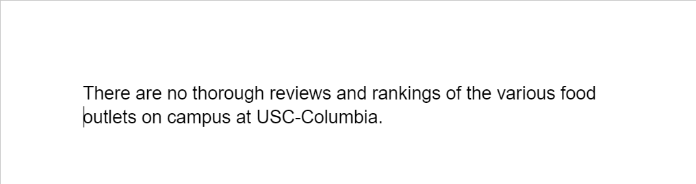
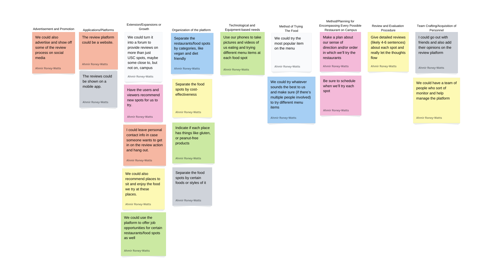
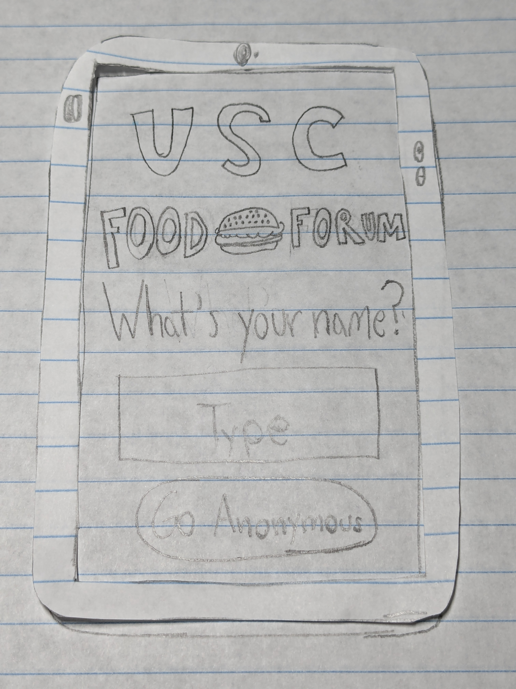

Highlighted projects
Problem Statement
There are no thorough reviews and rankings of the various food outlets on campus at USC-Columbia.
Affinity Diagram
This is an affinity diagram that maps all of the ideas for the review platform and contains solutions to potential issues or uncertainties that could arise in the future throughout development, maintenance, growth, or general use.
Sketches

These sketches model the various parts of the forum the user can access including creating their own review, creating a profile, and looking at locations and others' reviews of those locations.
Prototype
This is an extreemely low budget prototype for the USC Food Forum app where the user goes in anonymously to search for their favorite food and is able to see reviews from others and potentially create one themselves.